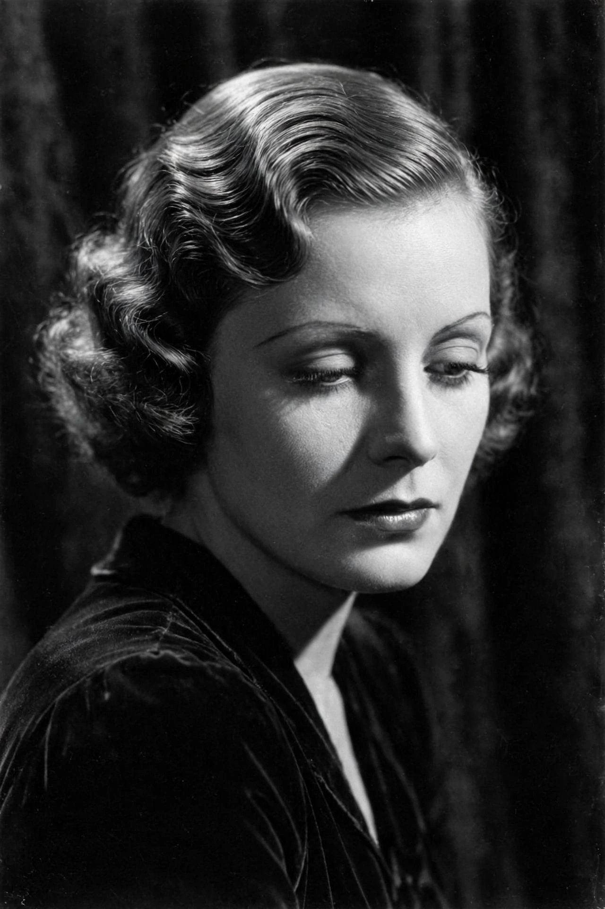

Swedish-American actress (1905–1990)
| Greta Garbo | |
|---|---|
 Garbo, the enigmatic star of MGM's golden age | |
| Born | Greta Lovisa Gustafsson, 18 September 1905, Stockholm, Sweden |
| Died | 15 April 1990 (aged 84), New York City, U.S. |
| Occupation | Actress |
| Years active | 1920–1941 |
Greta Garbo (born Greta Lovisa Gustafsson; 18 September 1905 – 15 April 1990) was a Swedish-American actress. Regarded as one of the greatest stars of classical Hollywood cinema, she was known for her melancholic, somber screen persona, her understated acting, and her reclusive private life. The American Film Institute ranked her fifth on its list of the greatest female screen legends of classic Hollywood.
Garbo was born into a working-class family in Södermalm, Stockholm. After work as a shopgirl and model, she won a scholarship to the Royal Dramatic Training Academy and was cast by director Mauritz Stiller in The Saga of Gösta Berling (1924). Stiller brought her to Hollywood in 1925 under contract to Metro-Goldwyn-Mayer, and gave her the name Garbo.
Garbo became an international star in silent films such as Flesh and the Devil (1926) opposite John Gilbert. She made a celebrated transition to sound with Anna Christie (1930), marketed with the slogan "Garbo talks!", and received Academy Award nominations for that film, Romance (1930), Camille (1936), and Ninotchka (1939). Her other celebrated roles include Mata Hari (1931), Grand Hotel (1932) — in which her character utters the famous line "I want to be alone" — Queen Christina (1933), and Anna Karenina (1935). Ernst Lubitsch's Ninotchka, sold with the tagline "Garbo laughs!", revealed her gift for comedy.
After the commercial failure of Two-Faced Woman (1941), Garbo retired from the screen at the age of 35, having made 28 feature films. She declined all attempts to lure her back, became a naturalised American citizen in 1951, received an Honorary Academy Award in 1954, and lived quietly in Manhattan until her death in 1990. Her reclusiveness only deepened her legend.